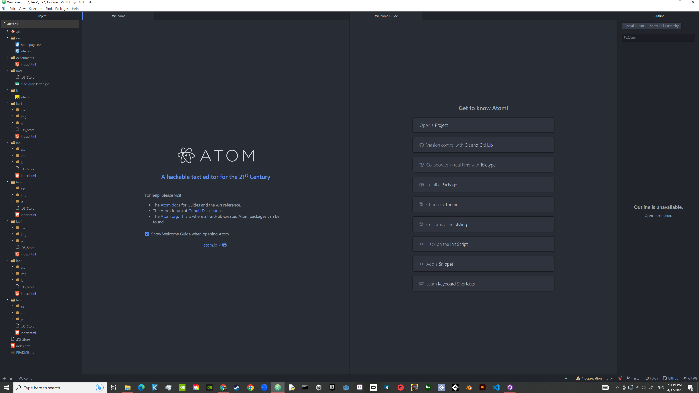

The idea of this lab was to further create a local file structure on my computer and add index.html files.
Getting the images to appear right in my website was pretty hard, especially for the lab 3.
Well you are looking at the index.html file I created. Here is the file structure that I made:
